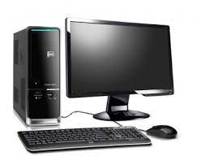
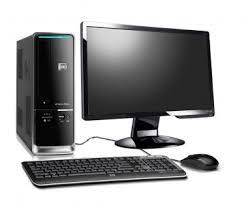
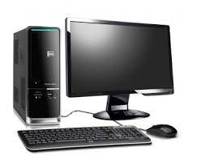
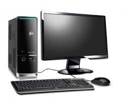

La computadora es una maquina electronica capaz de almacenar información y tratarla automaticamente mediante oeraciones matematicas y lógicas controladas por programas informáticos. Un computador es una máquina electrónica que está diseñada para realizar tareas específicas. En muchos países se le conoce como computsdora u ordenador, pero todas estas palabras se refieren a lo mismo. Con esta máquina se pueden desarrollar tareas que ahora hacen parte de nuestra vida cotidiana, como elaborar cartas o una hoja de vida, hablar con personas de otros países, hacer presupuestos, jugar y hasta navegar en internet.

La primera computadora moderna apareció en otoño de 1968, como un prototipo presentado por Douglas Engelbart. Doctorado por Berkley, entró en el Instituto de Desarrollo en Stanford, donde trabajó en el desarrollo de dispositivos informáticos y obtuvo numerosas patentes como la 3.541.541, que describía un dispositivo capaz de proporcionar la posición X e Y de un cursor que señalaría elementos en una pantalla, lo que hoy conocemos y usamos como ratón.
{kind=link}